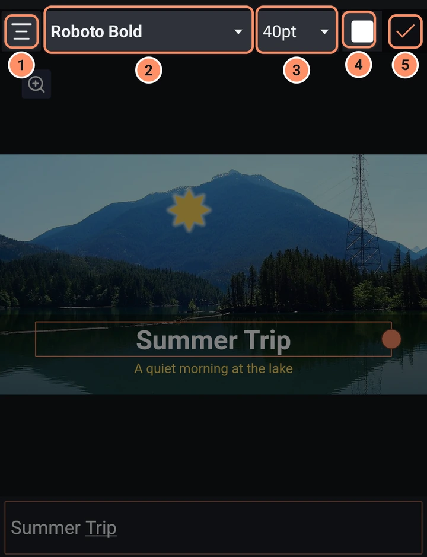

النص والخطوط
أضف النص ونسّقه، واختر من 150 خطًا، واملأ الحروف بصورة، وحرّك النص وامنحه صوتًا متحدثًا وأنشئ تسميات توضيحية.
في هذه الصفحة
إضافة نص
اضغط زر + ثم نص. تُضاف طبقة نص في منتصف اللوحة (رمادي، Roboto Regular، 18 نقطة، محاذاة لليسار) ويُفتح محرر النص بملء الشاشة فورًا.
في أعلى المحرر:
- المحاذاة تتنقل بين اليسار والوسط واليمين والضبط.
- اسم الخط (المعروض بأسلوبه الخاص) يفتح شريطًا بخطوطك الأخيرة ومفضلاتك وإظهار كل الخطوط.
- زر الحجم (مثل "18pt") يفتح شريط تمرير فيه 25 حجمًا من 5 إلى 144 نقطة.
- مربع اللون يفتح منتقي اللون مع القطارة.
- علامة الصح (تم) تغلق المحرر.

تحتها المعاينة ثم مربع النص، الذي يقول "أدخل نصك هنا." حتى تكتب. اسحب المقبض الدائري عند حافة إطار النص في المعاينة لتغيير العرض الذي تُلتف عنده الأسطر. اسم طبقة النص هو نصها، حتى تعيد تسميتها.
لتعديل النص لاحقًا، اختر الطبقة واضغط تحرير النص.
تنسيق النص
تعمل الأدوات الأخرى على النص كما على أي طبقة.
- التعبئة واللون يمنح الحروف لونًا أو تدرجًا أو صورة أو فيديو (وسائط).
- الإطار والظل: الخط هو محيط الحروف. الحدود والظل يضيفان المزيد.
- العتامة والتحويل والتأثيرات تعمل كما في الأشكال.
- تحويل إلى حدود (قائمة الطبقة) يحوّل النص إلى شكل يمكنك تعديله نقطة بنقطة. ولا يمكن إعادته إلى نص.
تتبع الرموز التعبيرية إعداد نمط الإيموجي: رموز هاتفك أو المجموعة التي تأتي مع التطبيق. انظر الإعدادات.
الخطوط
يضم الكتالوج 150 عائلة خطوط. 50 منها مدمجة في التطبيق. أما الـ 100 الأخرى فتُنزَّل من Google Fonts أول مرة تختار فيها واحدًا (تظهر بأيقونة سحابة وعبارة "تُنزَّل عند الاختيار"؛ ويحتاج التنزيل إلى اتصال بالإنترنت). المشروع الذي يستخدم خطوطًا لا تملكها يعرض خطوط غير موجودة على هذا الهاتف عند فتحه، ويستخدم النص خطًا آخر حتى تنزّلها.
متصفح الخطوط
إظهار كل الخطوط يفتح شبكة خطوط، يُعرض كل منها بنموذج. في الأعلى زر قائمة يفتح درجًا به هذه عوامل التصفية:
- الفئات: Serif، Sans Serif، Display، Handwriting، Monospace، المفضلة والمستوردة.
- الترتيب: شائع أو أبجدي.
- اللغات: كل اللغات أو واحدة من ست عشرة كتابة مثل العربية والسيريلية واليونانية والعبرية واليابانية والكورية والصينية والتايلاندية والفيتنامية واللاتينية.
- استيراد خطوط.
حقل البحث في الأعلى مكتوب عليه "اكتب هنا للبحث". النجمة على الخط تعيّنه كمفضل.
أثناء البحث، يعرض صف من الشرائح تحت الحقل الكل ومستورد والتطبيق والجهاز وGoogle Fonts؛ اختر واحدة لرؤية ذلك المصدر فقط. تأتي النتائج بهذا الترتيب: خطوطك المستوردة، ثم خطوط التطبيق، ثم الخطوط الموجودة على هذا الجهاز، ثم سطر بعنوان Google Fonts يضم العائلات المطابقة من كل خطوط Google Fonts. تحتاج قائمة Google Fonts إلى اتصال بالإنترنت في المرة الأولى (ثم تُحفظ لمدة أسبوع)؛ وبدونه يغيب هذا القسم ببساطة. اضغط على عائلة من Google Fonts لتنزيل نمطها العادي واستخدامه. لا يُرسل ما تكتبه في البحث إلى أي مكان: لا يُحمَّل من Google سوى القائمة والخط الذي تختاره.
خطوطك الخاصة
استيراد خطوط يتيح لك اختيار ملفات خطوط من هاتفك. إذا تعذّر استخدام ملف، تعرض قائمة الملفات التي فشلت. يمكنك أيضًا اختيار ملف .zip: يتم استيراد كل خط بداخله. تنتهي قائمة الخطوط بصف "ابحث عن المزيد من الخطوط على DaFont" يفتح موقع DaFont في متصفحك عند بحثك الحالي (لا ينزّل AbsentMotion أي شيء من DaFont بنفسه): نزّل خطًا من هناك، واستورد ملف .zip الخاص به هنا، وتحقّق من ترخيصه قبل استخدامه في فيديو منشور. اضغط مطولًا على خط مستورد لإزالته.
تحريك النص
تأثيرات فئة النص تحرّك النص حرفًا بحرف.
- تقدم النص يكشف النص حسب الحرف أو الكلمة أو السطر (الآلة الكاتبة والتلاشي بالكلمة إعدادات مسبقة).
- تحويل النص يحرك كل حرف ويدوّره ويقيّسه ويُتلاشى به بالتناوب (الإعدادات المسبقة: موجة وشلال دوران).
- عشوائية النص تخلط الحروف قبل أن تستقر (الإعداد المسبق: بعثرة).
- اهتزاز النص يهز كل حرف على حدة، مثل حوار متوتر في لعبة: اهتزاز أو ارتعاش أو موجة أو دائرة أو تمايل. اخفض الحروف المهتزة لتهتز بعض الحروف فقط، وتُختار من جديد كل لحظات قليلة (الإعدادات المسبقة: متوتر، خائف، قلق، عائم، متموج، دائخ، مترنح).
- أصوات النص يكتب النص حرفًا حرفًا ويشغّل نقرة صوتية قصيرة لكل حرف، مثل شخصية تتحدث في لعبة. اختر واحدًا من ثمانية أصوات، ونغمته، وسرعة الكتابة؛ تبقى المسافات وعلامات الترقيم صامتة، مع وقفة قصيرة بعد علامات الترقيم. تُشغَّل النقرات في المعاينة وفي التصدير (الإعدادات المسبقة: بطل، وحش، روبوت، سريع الكلام، آلة كاتبة).
- سمك الخط يجعل الحروف أرفع أو أسمك ويمكن تحريكه. يعمل مع الخطوط المتغيرة: Raleway وQuicksand وComfortaa وLora وBitter وOrbitron وPlayfair Display وDancing Script، أو خط متغير تستورده.
- عدّ تصاعدي/تنازلي والرمز الزمني يحوّلان النص إلى عدّاد أو ساعة.
- نص على مسار يضع النص على طول قوس أو دائرة أو الشكل الذي تحته مباشرةً؛ حرّك الموضع ليجري النص على المسار.
انظر استخدام التأثيرات لمعرفة كيفية إضافتها، ومكتبة التأثيرات لكل إعداد.
ASCII، من تأثيرات التنميط، يعمل بالعكس: يحوّل أي طبقة، مثل فيديو، إلى فن نصي مكوَّن من حروف ورموز.
التسميات التوضيحية
تسميات توضيحية تلقائية تستمع إلى الكلام في فيديو أو صوت وتنشئ طبقة نص واحدة لكل تسمية توضيحية، على الهاتف ودون اتصال. انظر أدوات الذكاء الاصطناعي.